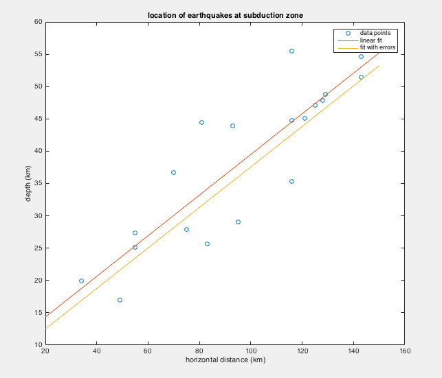

A Python + Matlab code written specifically for particle tracking
within the MAPP-2 detector at the LHC. The program improves the
detector's capacity at tracking the trajectories of the particles
as they decay and interact with the detector via advanced statistical
methods and primitive machine learning. Summary of results: 1cm pitch resolution with
100 % efficiency at zero noise, (92 +/- 4) % up to 150 background noise triggers,
and (85 +/- 5) % up to 300 background noise triggers.


The Monopole & Exotics Detector at the Large Hadron Collider (MoEDAL) is designed
to search for highly ionizing particle avatars of physics beyond the Standard Model of particle
physics. The MoEDAL Apparatus for Penetrating Particles (MAPP) is designed to extend the discovery horizon of
MoEDAL to include sensitivity to feebly interacting particles such as mini-charged particles and very long-lived
charged and neutral particles. This thesis reports contributions to four main
areas in the development of MAPP: 1) the planning and fabrication of the main
scintillator elements of the detector and the LED calibration system,
2) the second contribution details the testing of the PMT readout for the scintillating elements of MAPP,
3) a refinement to the calculation of ionization energy loss for a neutral particle with an anomalously large EDM,
4) the development of prototype tracking and vertexing software for MAPP.
A study on the saturation effects on two- and three-dimensional digital
holographic reconstructions employing a CCD camera via discrete fresnel
transformation on Matlab. In this experiment, code brings information
of the object's image im Fourier/hologram space, as recorded by the CCD
camera, back to real space; this is the principle of holographic reconstruction.
In this experiment, two types of holographic reconstructions are explored:
2D holographic reconstruction of a surface with a high relief pattern
and the tomographic reconstruction of a three-dimensional object.
Computer simulation for Millikan experiment for detection of fractional charges
via horizontal deflection due to electric field in vertical fall.
This study explores the possibility of detecting fractional charges through a
modified Millikan experiment. The experiment consists in dropping identical 25-micron
diameter glass spheres between an electric field of 500-1000 volts/mm produced
by 10 meter long vertically oriented parallel plate capacitors. The charge of a
sphere would be calculated indirectly by the amount of horizontal deflection
it achieves by the end of the 10 meter fall. The landing plane would have tiny
boxes placed at specific landing locations for each charge as predicted by a
computer model. The effects of Brownian motion are taken into consideration.
The main advantage of this experiment over the classical and other Millikan
experiments is that it would allow the measurement of the charge of a large
amount of tiny glass spheres in a short period of time. The results shown here
were generated with computer simulations.


Numerical integration of the Earth's orbit around the sun: calculation of the eccentricity
of the orbit and the time of perihelion and aphelion over a determined period of time.

Ordinary differential eigenvalue problems for the hydrogen atom problem in Quantum Mechanics.

A simple Monte Carlo simulation to calculate diffusion of a single argon atom in argon gas.
Tasks: 1) calculation of the number of collisions/second
2) plotting of the distance from the origin the atom travels as a function of time
3) calculation of the energy distribution of the particle as it bounces.
Atmospheric data analysis: 1) max and min temperatures as a function of date for weather stations
2) histogram of max and min temperatures for a weather station
3) overlapping data from two weather stations into a mean and standard deviation
4) 2D color histogram for differing measurements between two stations
5) no-atmosphere model of heating and cooling (looking at the solar flux on earth assuming that
there is no atmosphere).
A) 1) A study on Monte-Carlo Simulations and standard error propagations 2) Poisson confidence intervals
3) Binomial confidence intervals 4) analytic least-squares fitting.
B) 1) Monte-Carlo Simulation of polynomial fit 2) 1D errors and linear least-squares 3) 1D errors and MCMC
4) 2D errors and MCM.
1) Gas ionization and pulse generation of alpha particle 2) Photo-multiplier tubes and probabilities
3) Effects of digitization rate.
Problems with numerical derivatives.
The transformation of neutrinos in the Sun is explored via a quantum oscillation process
argument. We first attempt to show how the oscillation process can be explained by
the Maki-Nakawaga-Sakata-Pontecorvo mixing matrix. Secondly, we attempt to explain
the matter enhancement of the neutrino oscillation process as they travel through high
electron density regions in the Sun via the Mikheyev-Smirnov-Wolfenstein mechanism.
Our conclusions are compared with experimental data on neutrino oscillation and solar
neutrino flux on Earth from different experiments, including the results from the
Sudbury Neutrino Observatory collaboration, Kamiokande and KamLAND.
A prelimnary study for the full particle tracking algorithm development implemented
in my MSc Physics thesis. One of the methods for detecting particles at the MAPP detector of the MoEDAL experiment
at the LHC is via the reconstruction of decay vertices from incoming particles. The preliminary
study offered in this report found that, for neutral particles, decay vertices could be reconstructed
to a resolution of 0.069 +/- 0.005 m. In addition, a progress report is given on the testing of the
performance of the equipment.
Some simple games that I have written in Python.

A series of problem sets for Matlab ranging in topics such as:
1) Matrix manipulation and unit conversion
2) Diagonalization, loops, and plotting
3) Taylor series approximation and evaluation of a series around a specific value
4) Root finding methods
5) Non-linear systems of equations, linear fit, and data analysis
6) Interpolations
7) Numerical integration and Simpson's method
8) Numerical solutions to coupled differential equations (1st and 2nd order)
A series of problem sets in Mathematica/Wolfram for applications in optics:
1) Index of refraction, irradiace, wave propagation, and superposition of waves
2) Power density and Poynting vector
3) Lenses and matrix systems with applications to lenses
4) Fourier optics and Fourier transformations
5) Amplitude and irradiance patterns
6) Fresnel transmission and reflection, reflectance, transmittance, and polarization
The thermoelectric properties of a standard commercial Peltier Cell were studied with the pur-
pose of evaluating its efficiency for its possible applications; these properties included its electrical
conductivity, thermoelectric power, thermal conductivity, and internal resistance. It was found that
it has a merit figure 1.39 +/- 0:07 x 10^-3 kelvin^-1 (0.43 +/- 0.02),
making it a thermoelectric device of moderate effciency. In addition, under certain assumptions,
and when coated with black permanent marker ink, it showed a light absorption capacity of 90 +/- 1 %.
It was concluded that the Peltier cell is suitable for small scale applications, such as a device for
measuring the output power of commercially available lasers, or as a cooling system for small spaces.
This is a compilation of the experiments, and their corresponding laboratory manuals, that I designed,
and wrote, respectively, for an honours physics university course (PHYS 295 - Experimental Physics I)
at the University of Alberta. The experiments are: 1) Gaussian Statistics 2) Kater Pendulum
3) Single Slit Diffraction and Babinet's Principle 4) Bubble Chamber 5) Spectometry and Rydberg's Constant
6) Molecular Speed 7) Malus' Law 8) Solar Collector.
Wavelength shifters as a specific application of the broader optical fibers technique are discussed. The
physical mechanisms responsible for their working are explored. Applications to physics and engineering
are proposed.
1) The Photoelectric Effect
2) Michelson Interferometer
3) High Termperature Superconductivity
4) Frank-Hertz Experiment
5) Radioactive Decay: Poissonian Statistics
6) Faraday Effect
7) Magentism
8) Constant Volume Gas Thermometer
9) Darts Experiment (Gaussian Statistics)
10) Interference of Light
11) Sound Waves in Air
12) Standing Waves On a String
13) Simple Harmonic Motion
14) Oscillations of a Spring
15) Simple Pendulum
16) Viscosity
17) Relativity Simulations
18) Moment of Inertia
19) Collisions
20) Conservation of Mechanical Energy
21) Atwood's Pulley
22) Kinematics of Non-Uniform Motion
23) Determination of the Acceleration Due to Gravity
Document prepared to explain the use of the chi-square analysis in uncertainty quantification for
an honours physics university course (PHYS 297 Experimental Physics II) at the University of Alberta.
Designs for 3D printing